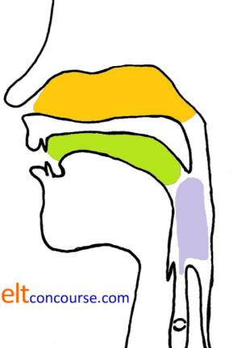
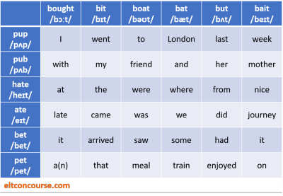

Teaching troublesome sounds
 |
| Something doesn't sound quite right |
For adult learners, in particular, any ambition to sound like a native speaker is probably unrealistic but all learners need to be comprehensible and none wants to put a strain on people's listening comprehension by the false production of the sounds of English. Even minor adjustments to, for example, the place in which /t/ and /d/ are pronounced or the way a schwa is produced can have a noticeable, immediate effect on helping learners lose the most obvious elements of a foreign accent.
A good source for specific languages and their sounds systems is
Swan and Smith (2001). That reference takes languages one by
one and sets out which sounds are most troublesome in English for
speakers of those languages, although it does it in a frustratingly
inconsistent manner. (If you are looking for issues affecting
a particular language on this page, use Ctrl + F to search it.)
This guide takes a different approach and sets out to look at a
range of the phonemes of English, explain what makes them difficult for
speakers of certain languages and then suggest some simple teaching
techniques which may help you help your learners pronounce things
more accurately. It also considers some languages lacking from
Swan and Smith and excludes others they cover.
There is no attempt to be exhaustive here either in the sounds
selected or in the languages mentioned. A completely
exhaustive list would fill many books so you will need to rely on
some research of your own into what phonemes cause your learners the
greatest difficulties. If you are a speaker of your learners'
first language(s), of course, that's easy. Teachers working
with multi-lingual groups face more of a challenge. This guide
is here to help.
Some of the solutions suggested are applicable beyond the specific focus here,
e.g., the suggested solutions to the issue of voicing can be applied
to a wider range of consonant sounds than are considered in what
follows.
In what follows, we are considering the standard forms of the languages mentioned. Individual speakers of any language will vary their pronunciation from the standard form and may, in fact, be fortunate that their accent or dialect actually does have a sound equivalent to the English phonemes.
If you are here to discover the problems and solutions with particular sounds, or get some ideas for teaching, here's an index:
Clicking on -top- at any time will return you to this menu.
 |
Vowels |
| Phonemes | Examples | The issues | The advice |
| /iː/, /ɪ/ and /i/ | as in
beat
and bit -top- |
The
first two vowels represent a notorious
issue because many languages do not distinguish the short
and long sounds represented by these transcriptions or do
not lengthen the /i:/ sound sufficiently. The short sound is slightly more central and lower in terms of tongue position than the long sound. There are two groups of languages that this affects and the effect of both is that learners fail to produce the short /ɪ/ sound.
|
If your learners'
language falls into the first group, the short vowel needs to
be taught from scratch. Stage 1 is recognition and
that can be achieved simply by getting the learners to notice
the shape of the lips, stretched laterally for /i:/ and
a little more relaxed for /ɪ/. The old trick of getting people to smile and say cheese when having a photograph taken usually works well to alert learners to the long sound they can already produce but it is the short sound that causes problems for learners from these language backgrounds. Start with the long sound (which they can easily produce) and then remove the smile, relaxing the lips (or even rounding them slightly) to make the short sound. Try getting learners to breathe out completely and empty their lungs before producing the sound. With no available breath, it is possible to produce /ɪ/ but not /i:/. An alternative approach is to get the learners to say the /i:/ sound and while extending it, saying eek!, lower the tongue and move it towards the back of the mouth slightly to shorten it, relax the lips and then cut off the breath. The second group of learners who actually do have a longer sound /i/ but usually not the short /ɪ/ tend to produce /i/ in both cases, failing to produce the short sound and failing to lengthen the long sound sufficiently. They can be encouraged to locate words in their first language(s) which have the /i/ and then simply elongate it to produce the /i:/ sound effectively. For the short sound, try the techniques above. For both sounds, try some of the ideas for minimal-pair work (see the teaching suggestions below). |
| /ʊ/ and /uː/ | as
in put
and loose -top- |
Speakers of languages which have trouble with these sounds
in English fall into three groups: those that have /uː/ but
not /ʊ/, those that have /ʊ/ but not /uː/ and those
that have an intermediate sound like /u/ which is neither as
short as /ʊ/ nor as long as /u:/:
|
Speakers of languages which do not have the short sound
encounter the most trouble. The lip rounding is more or less the same for both sounds so it is only the fact that the tongue is raised and placed further back in the mouth which distinguishes /u:/ from /ʊ/. One way to show the difference is to get learners to produce an elongated /u:/ sound and while doing it, move the tongue downwards and slightly towards the front of the mouth. It takes a good deal of practice to get it right. For the second group, it is worth noticing that almost all languages have an expression of disgust or surprise such as Pooh! or Oooh! and that can be dragooned into getting learners to produce the longer vowel /u:/ by exaggeration and then shortening it slightly to be more realistic. The third group have a tendency to produce the same /u/ sound in all words and they need a combination of the two techniques above to get it right. First get them to say the surprise sound as in Oooh! and then to move the tongue downwards and slightly towards the front of the mouth while simultaneously cutting off the airflow. |
| /ə/ the schwa | as
in about -top- |
This is the commonest vowel sound in English and it's
important for people to get it right or they will sound too
precise in many cases or fail to pronounce the final sound
correctly. Languages which do not have the schwa include: Scandinavian languages (speakers of which have something similar but do not reduce the sound sufficiently) Italian Spanish (but not Catalan) Portuguese Greek Czech Polish Arabic (which is properly a language group rather than a single language with large variations in pronunciation) Turkish (which has something similar but whose speakers tend to make the sound too high in the mouth, tending to /ɪ/) Japanese |
Speakers of languages which do not have the schwa rarely
have trouble making the sound because it is completely
central. A beginning is simply to get the sound right
as in the beginning of words like alive, asleep, around
etc. or at the end of words like father, doctor, flavour
etc. It is slightly more troublesome to get learners to produce the sound in the central position in words such as roundabout, photographer, gardener (/ˈraʊnd.ə.ˌbaʊt/, /fə.ˈtɒ.ɡrə.fə/, /ˈɡɑːdə.nə/) etc. where the tendency, influenced by spelling, is to give the letter its full pronunciation and produce /ˈraʊnd.eɪ.ˌbaʊt/, /fɒ.ˈtɒ.ɡræ.fə/ and /ˈɡɑːde.nə/ respectively. The issue is also one of timing and stress patterns across phrases and clauses and that needs handling in connected speech rather than in isolation because that is where the sound is most frequent. In particular, the reduction of function words such as and, but, of, to, for etc. needs focused attention. |
| /ɜː/ | as
in worse -top- |
There is a range of issues here with some languages
pronouncing the phoneme with rounded lips which makes it
tend too far towards /u:/. These include
Dutch, Danish, Swedish and Norwegian as well as some
dialects of German Other languages have no equivalent sound, including: Italian Spanish and Catalan Portuguese Greek Czech Russian Polish Farsi (Persian) Arabic (see note above) Turkish Japanese Korean Chinese languages |
For lip rounding issues, it is usually enough to demonstrate
the lip position with the sounds for speakers of Dutch and
the other languages to be able to adjust. Other solutions follow on from the solutions to the schwa, above, because the sound is slightly longer and the tongue position slightly lower than for /ə/. One solution is to pair the sounds so we can have about and urban (/ə.ˈbaʊt/ and /ˈɜː.bən/) and once the pronunciation of the /ə/ has been satisfactorily mastered, the pronunciation of /ɜː/ becomes much easier. Simply lengthening /ə/ makes an acceptable substitute for /ɜː/. |
| /æ/ and /ʌ/ | as
in cap and
cut -top- |
These sounds have no equivalent in many languages and
speakers will often produce the nearest familiar sound.
|
These are both low front vowels so tongue height is
important to get right. For speakers of most
languages, the sound /ɑː/ is not too problematic. Getting the learners, therefore, to produce the back vowel /ɑː/ and then move the tongue forward in the mouth should result in correct pronunciation of /æ/. Once that is mastered, the tongue needs to be pulled slightly back and raised a little to produce /ʌ/. Speakers of languages which have the /ʌ/ sound are more fortunate because they have merely to lower the tongue and bring it slightly further forward to make /æ/. |
| /ɔː/ and /əʊ/ | as
in bought
and boat -top- |
This
is a common confusion and speakers of languages which do not
have the /ɔː/ often substitute the /əʊ/ diphthong or
vice versa. There are three groups here:
|
The
first issue is that the spelling of the /ɔː/ is very
variable in English, occurring in, e.g., bought: /bɔːt/ short: /ʃɔːt/ or: /ɔː/ core: /kɔː/ law: /lɔː/ sure (for many speakers): /ʃɔː/ so learners need to focus on sound not spelling and not be influenced by the letters in the words. Do not write the words on the board until the pronunciation has been mastered. This is a difficult area because the second of these sounds is a diphthong, combining /ə/ and /ʊ/ and many languages contain neither of the sounds that make up the diphthong. Until learners can successfully produce the two pure vowels, they cannot be expected to produce the diphthong so the first step is to get those right (see above for some ideas). The /ɔː/ is a pure vowel but it has no equivalent in many languages. It is a very low back vowel and similar to the /ɑː/ which many learners can successfully produce. The difference mostly lies in lip rounding and that can be made clear by miming the sound and getting learners to notice the lip positioning before they try to produce the sound itself. |
 |
Consonants |
There are four main issues with the pronunciation of consonants in English:
- Some languages do not contain consonants which are common in English and some contain more that English does not have. There is a natural tendency for learners to substitute near equivalents which may be, but are often not, English consonants.
- Consonants may occur with one or more allophones in English which are full phonemes in other languages.
- Consonants which are full phonemes in English may be allophones in other languages so learners may not see the need to pronounce them differently or perceive the difference at all.
- Phonotactic rules often mean that certain combinations of consonants are possible in English but forbidden in other languages and vice versa. For more, see the guide to the syllables and phonotactics (new tab).
| The issue | The description | The advice |
|
aspiration |
The
phonemes /p/, /t/ and /k/ appear in English in at least two
main forms: aspirated (/pʰ/ /tʰ/ and kʰ/) and non-aspirated
(without the /ʰ/). For example: take: /tʰeɪk/ pike: /pʰaɪk/ kite: /kʰaɪt/ start: /stɑːt/ pickle: /ˈpɪk.l̩/ blacken: /ˈblækən/ The allophones carry no semantic information in English. Other languages do things differently and in these the aspirated and non-aspirated forms are phonemic, carrying a distinction in meaning. In most Chinese languages, including Mandarin and Cantonese, the aspirated and non-aspirated versions of /t/, /k/ and /p/ are full phonemes distinguishing minimal pairs. Similar considerations apply to Korean. In Thai, too, the two forms of /p/ and /t/ are also phonemes. In other languages, these sounds are never aspirated or always aspirated so there will be a tendency by their speakers to produce the same sound in all positions, rendering, e.g.: cake as /keɪk/ or /kʰeɪkʰ/ pip as /pɪp/ or/pʰɪpʰ/ tot as /tɒt/ or /tʰɒtʰ/ etc. Speakers of Japanese, Polish and Russian, for example, may do this. A number of languages do not produce aspirated versions of these consonants in the initial position making /p/, /k/ and /t/ sound closer to /b/, /ɡ/ and /d/, respectively. This affects speakers of: Dutch Spanish Portuguese Russian -top- |
Learners whose first languages have both the aspirated and
non-aspirated forms of these consonants have no difficulty
producing them but some in knowing when to do so.
Practising the initial-position aspirated allophones is a
starting point and being aware of when the learners produce
the inappropriate sound is helpful. Learners whose first languages do not have aspirated forms need more careful treatment. Holding a thin piece of paper in front of the mouth will determine whether a consonant is produced with or without aspiration. In the former case, the paper should move slightly as breath is released. Learners whose first languages have aspirated versions but who do not use them in the initial position as English usually does can also be trained this way and the upshot is often that they sound considerably less foreign. |
|
voicing and de-voicing |
English does not routinely de-voice final consonants so,
e.g.: pad is pronounced as /pæd/ tub as /tʌb/ fog as /fɒɡ/ gaze as /ɡeɪz/ ridge as /rɪdʒ/ smooth as /smuːð/ love as /lʌv/ Other languages routinely de-voice the final consonant so, e.g.: tub sounds like /tʌp/ fog sounds like /fɒk/ gaze sounds like /ɡeɪs/ ridge sounds like /rɪtʃ/ smooth sounds like /smuːθ/ love sounds like /lʌf/ Learners from the following language backgrounds may do this: Dutch German French (although this may be because French speakers do not usually lengthen the vowel before voiced consonants) Spanish and Catalan Turkish Czech -top- |
The
issue is usually quite easily fixed because these languages
do have the voiced equivalents, making it simple for the
speakers of them to pronounce the sounds. However, unless their attention is drawn to the issue many learners persist, even at higher levels, in de-voicing final consonants with a consequence that they contribute to sounding more foreign than they should. The first issue is for learners to be able to distinguish between voiced (lenis) and unvoiced (fortis) sounds. One way is to start with a sound that can be extended and get learners to say firstly SSSSSSSSSS and then the voiced sibilant ZZZZZZZZ with their hands on their throats. In the first case, there should be no vibration of the vocal cords and in the second, the learners should perceive the vibration. Then they can go on to try something like: SSSSSSZZZZZZSSSSSSZZZZZZSSSSSS This is trickier with stops which cannot be continuously produced like the distinction between /b/ and /p/ or fricatives such as /f/ and /v/ but can still be done with a little practice. Often, the issue is one of simply noticing how the learners are producing final consonants and alerting them to what they should be saying. |
|
allophonic differences |
Sounds which are full phonemes in English may be allophones
in other languages and learners may simply not see the need to insert the correct phoneme and may also be unable to
perceive it. In Arabic, for example, /b/ and /p/ and /f/ and /v/ are allophones in most varieties so differences between pat and bat and fat and vat may simply be inaudible. For many Japanese, Korean and South Chinese speakers /r/ and /l/ are distinguishable, especially in very slow, careful speech, but are allophones rather than phonemes. See below for more on /l/ vs. /r/. -top- |
Some
care needs to be taken to distinguish the sounds and get
learners to notice the semantic effect of replacing /b/ with
/p/ and/f/ with /v/ in English. The fact that the sounds are allophones means, that they can be produced but may be in free variation depending on the learners' dialect and personal accent. It is, therefore, more of an awareness-raising issue than one of production. |
|
/θ/ and /ð/ as in thank and this |
These two sounds are not unique to English but few languages
have both and most have neither. The usual effect is that /θ/ is rendered as /f/ or /s/ and /ð/ is as /d/ or /z/. Greek has both sounds and this causes speakers few problems in English. Arabic has both sounds but only in literary forms; colloquial speech renders them as /t/ and /d/. Spanish (European but not usually American varieties) and Catalan have only /θ/ so the tendency is to use it when /ð/ is more usual. -top- |
There is no quick fix for this because the sounds are
unfamiliar and it takes a good deal of practice to produce
either and even more to produce both appropriately. The key point is that the sounds are both described a dental fricatives but /ð/ in particular can be produced as an alveolar sound. The usual distinction between voiced and unvoiced versions can be made by getting learners to place a hand on their throats and feeling the vibration on the voiced sound as one would for the more usual and common /s/ and /z/ sounds. |
|
/t/
and /d/ |
This
unvoiced-voiced pair exists in many languages but English is slightly unusual in producing them as alveolar rather
than dental stops (with the tongue touching the gum ridge
rather than the top teeth). Learners with these first languages
may produce the sounds dentally and that contributes to a
foreign accent: Dutch German Italian Russian Polish Speakers of some south Asian languages often produce a retroflex sound (made with the tip of the tongue curled back) in place of /d/ and /t/ (transcribed as [ɖ] and [ʈ]). Swedish and Norwegian speakers use the retroflex [ʈ] after /r/. -top- |
Cure
is simple once learners have had the alveolar and
non-retroflex nature of the English sounds explained with
the aid of a diagram, where necessary (see below). Lots of practice is, however, required to make the process automatic. It is rare for the confusion between dental and alveolar or retroflex pronunciations to be the cause of communication breakdown but both contribute to the perception of a foreign accent in English so it is worth taking a little time with this. |
|
/l/ and [ɫ] |
English is slightly unusual in have both allophones of /l/,
the dark and the light or clear. Speakers of languages which do not have a dark form ([ɫ]) will produce a light one instead. They include speakers of: Scandinavian languages German French Russian Farsi (Persian) Thai Japanese Korean Some Chinese languages -top- |
The
solution is not simple and the issue is often ignored
because using the wrong allophone will not, by definition,
be a cause for non-comprehension in a hearer. However, the non-production of the dark form will make speakers sound foreign and the clear sound at the ends of words is often followed by /ə/ and that is particularly noticeable in Italian speakers. Simply explaining how [ɫ] is achieved by raising the velum to block the air flow and then practising it can pay dividends. |
|
/l/, [ɫ]
and /r/ |
The
non-distinction between these two phonemes is most significant
for speakers of Southern Chinese dialects, Korean and
Japanese. The issue is that the sounds, even when they occur are allophones, not phonemes. The dark [ɫ] usually causes fewer problems, in fact. The /r/ sound is troublesome for many because it is not evident in BrE at the end of words like father unless it is followed by a vowel (a linking /r/). For this reason, some learners find an American accent easier to understand in this respect. Speakers of most European languages may have a much stronger pronunciation of /r/, rarely like English, and tend to over pronounce it. In particular, Spanish has a phonemic rather than allophonic distinction between the flap [ɾ] sound and the trilled sound akin to the Scottish pronunciation of /r/. Many languages, including Bulgarian, Swedish, Norwegian, Italian, Spanish, Russian, Polish, Ukrainian and Dutch use a similar trilled sound. French and some German speakers may produce the voiceless uvular fricative, phonetically [ʁ] which is produced by restricting the airflow over the back of the throat with the tongue. Doing so in English contributes to a distinctive foreign accent. -top- |
The
problem is serious but not wholly intractable. Producing [ɫ] instead of /l/ will not, in English, lead to any confusion for a hearer but the speaker will sound a little odd. One way to get them to do this is to ask learners to produce [ɫ] at the beginning of a word like love by extending the consonant sound unnaturally and producing /ɫʌv/ instead of /lʌv/. Then put the word into a short phrase such love letter and get them to start by saying it very slowly, producing [ɫ], and slowly speed up when it should lead them to making /l/. In English, both /l/ and /r/ are approximants so there is, in fact, only a small difference between them with the air being slightly obstructed so that it flows at the sides of the tongue for /l/ and between the tongue and the roof of the mouth for /r/. Here are some ideas:
|
|
/h/ |
This
phoneme, when it exists, can be troublesome because in
English it is always unvoiced and often dropped in connected
speech. Speakers of the following languages may ignore it or pronounce it wrongly, often as a velar continuant /x/ as in the Scottish loch: French, Italian and Greek have no equivalent so the phoneme is often ignored altogether or substituted by /x/, /k/ or the voiced version of /x/ transcribed as [ɣ]. Some Dutch speakers may substitute /x/. In Spanish, Catalan, Russian, Polish, many varieties of Arabic and the Chinese languages: the 'h' is pronounced as /x/ and that is often carried over to English. In Portuguese, there is no initial /h/ sound so the phoneme may be dropped. -top- |
The sound in English is a glottal fricative produced in the
throat rather than the velar sound made when saying /x/,
[ɣ], /k/ or /ɡ/. Speakers of languages which have no equivalent clearly have the most problems and they need training in how it is pronounced. For other learners, the problem is usually the over pronunciation of the letter as /x/ or even [ɣ]. This leads to the pronunciation of, e.g., hello as /xe.ˈləʊ/ rather than /hə.ˈləʊ/ so with their first word, some learners have already advertised the fact that they are not native speakers. One trick is to use a diagram to show learners where the sound is produced (at the far back of the throat rather than with the vellum). Get learners to produce the vowel /ɑː/ (which most can do) and then to constrict the throat slightly to make the air turbulent. When teaching distinctions between voiced and unvoiced consonants it makes sense to include the /h/ sound and distinguish it from /x/ and /ɣ/, /k/ and /ɡ/. In connected speech, some learners may be reluctant to omit the sound in, e.g., give him it (/ɡɪv.ɪm.ɪt/), saying /ɡɪv.hɪm.ɪt/ or even /ɡɪv.xɪm.ɪt/. Usually, this is simply a lack of awareness. |
|
/b/
and /v/ |
/b/
and /v/ may cause problems for speakers of Spanish and
Catalan because the languages have an intermediate phoneme
so the letters may be pronounced indistinguishably. -top- |
The
issue here is not very serious although it contributes to
a noticeably Spanish / Catalan foreign accent in English. For the most part, focus on place of articulation is needed to distinguish /b/ (bilabial) from /v/ (labiodental). Minimal pair work with words like vote, boat, lover, lubber etc. can pay off. |
|
/ɡ/ |
Some languages, including Dutch, Arabic
and Korean, lack the
voiced /ɡ/ so /x/, /k/ or [ɣ] (a more energetically
pronounced fricative sound) may be substituted. German speakers may also produce [ɣ] instead of /ɡ/ but this may depend on the variety of German they speak. Greek has the sound but it is rare and the same effect may be noticed. (Old English, incidentally, did have the [ɣ].) -top- |
The sound is a voiced velar stop formed by cutting off the
airflow at the back of the mouth and vibrating the vocal
cords at the same time. For learners whose first languages have a /k/ sound, the solution is simply to make the /k/ and add voice (see above). For learners who substitute /x/ or [ɣ], the issue is a bit more serious but one approach is to begin with the familiar fricative and then stop the airflow suddenly, making the /ɡ/ correctly. Learners with the tendency to use /x/ instead of /ɡ/ will then produce /k/ to which they need subsequently to add voicing. It is, therefore a two-stage process for them but a one-step process for those using [ɣ] which is already voiced. |
|
/tʃ/,
/ʒ/ and /dʒ/ |
These sounds, are either fricatives (/ʒ/) formed by
restricting the airflow to produce turbulence or
affricatives (/tʃ/ and /dʒ/) formed as a combination of a
fricative and a stop. They appear in, e.g.: chair: /tʃeə/ measure: /ˈme.ʒə/ hedge: /hedʒ/ The sounds /tʃ/ and /dʒ/ are an unvoiced-voiced pair. Some or all do not occur in a range of languages and the usual substitution is: /ʃ/ for /tʃ/ and /ʒ/ /ʒ/ or /tj/ for /dʒ/ Languages in this category include:
|
Given the range of issues here, these sounds need careful
practice. Learners whose first languages fall into group one will have the most difficulty because they have none of the sounds. For these and other learners, the first step is to use a diagram explaining where they are pronounced (see below). /tʃ/ and /dʒ/ are affricatives produced by pressing the tongue to the hard palate, stopping the airflow and then allowing turbulent air to flow over the tongue by withdrawing it downwards and backwards. The first is unvoiced (fortis) and the second is voiced (lenis). Making the sounds requires, for some learners, a good deal of practice but positioning the tongue as if for a high vowel such as /iː/ or /ɪ/ and then following it with the consonant helps because the tongue is already in more or less the right place. To practice /tʃ/ start with a full stop sound such as /t/ which most learners have little difficulty making and then get them to move the tongue down slowly until turbulent air produces the following /ʃ/ sound. /dʒ/ can be practised in the same way for this group by starting with a voiced stop /d/ and keeping the vocal cords in vibration while making the sound. Learners whose first languages have no /dʒ/ but do have the /tʃ/, can also be led to the same sound by adding voice. To ensure that learners are able to add or remove voice from sounds at will, start by getting them to say SSSSSSSS followed by ZZZZZZZ and then add and remove voice by saying SSSSSZZZZZSSSSSZZZZZ etc. Many languages have no /ʒ/ and this sound requires different treatment because it is a full fricative (and can be extended indefinitely). Start with /ʃ/ which most learners can make and add voice to the sound to produce the /ʒ/. Learners who can say mesher (/meʃə/) can, by adding voice to the sound, produce measure (/ˈme.ʒə/) (eventually). Because Chinese speakers do have related sounds, the issue is one of adjusting the mouth shape from the Chinese sounds to the English sounds. Diagrams (see below) will help but practice is needed to get it consistently right. For Chinese speakers, /tʃ/ can be nearly made by devoicing the Chinese sound /tɕ/. |
|
/ʃ/ |
Languages without /ʃ/ or an intermediate sound between /s/
and /ʃ/ include: Spanish and Catalan Greek Dutch (some dialects) Thai Japanese Tagalog Chinese languages (although a similar sound, /ʂ/ exists as it does in Finnish) Korean has a similar sound but /s/ is often substituted -top- |
This is not usually a serious problem although the
substitution of /s/ for /ʃ/ contributes to a foreign accent
considerably. The sound is a true fricative and can be extended indefinitely as in, e.g., Shshshshshsh! and is formed by allowing turbulent air to flow between the tongue and the hard palate. Making the sound is not usually the difficulty but remembering to make it is problematic. You need to be alert to learners whose first languages do not have the sound that they are not routinely substituting /s/ for /ʃ/. |
|
/v/
and /w/ |
/v/ and /w/ cause a familiar problem for some German
speakers and the influence of spelling is also noticeable.
The German letter 'v' is pronounced as /f/ and the letter
'w' as /v/. Dutch speakers may also confuse /v/ and
/w/. Scandinavian languages do not have the /w/ and /v/ is often substituted. Although Farsi (Persian) has both /v/ and /w/, the phonemes are sometimes confused. -top- |
The inability to pronounce /w/ often arises from its
vowel-like articulation. Learners can be led to the
correct pronunciation by making it a diphthong pronounced
something like /u:/ plus /i:/ or /u:/ plus /ɪ/. Saying
it slowly at first helps and then speeding up until the
pronunciations of, e.g., whisky (/ˈwɪ.ski./) and wine (/waɪn/)
are clear. Start with /u:.iski/ and /u:.aɪn/ and then go faster. Simple awareness raising of the spelling issue with /v/ and /f/ is usually enough but this can be a persistent problem for some speakers who are wedded to the written word. |
|
Consonant clusters |
A
number of languages do not exhibit consonant clusters and
learners will be tempted, therefore, to insert a vowel,
usually a schwa, between the elements of the cluster,
producing, for example, /səkəruː/ instead of /skruː/ for
screw. These languages include: In French, there are no final /z/ sounds in clusters making some plurals and third-person verb forms difficult for French speakers. The temptation is to replace the sound with /s/, making the plural of hands as /hænds/, not /hændz/, and the third-person verb ending similarly as /həʊlds/, not /həʊldz/ for holds. The /z/ is not frequent in French but does occur initially so the sound itself is not mysterious. Spanish and Catalan do not allow /s/ + /p/, /t/ or /k/ initially and speakers may insert /e/ before them, producing, e.g. eschool (/ˈeskuːl/) instead of school (/skuːl/). Portuguese phonotactic rules lead to a similar phenomenon. Russian speakers may have problems with certain initial clusters starting with /t/ as they are not permitted in Russian. Finnish does not allow more than one consonant in the initial position and speakers may tend to reduce such clusters, rendering, e.g., stop as top. Farsi and Arabic do not have consonant clusters within syllables and vowels may be introduced as above. Thai and other South Asian languages as well as Japanese and Chinese languages are similar in this respect and the same issue arises. Thai speakers, in particular will often simplify final clusters, retaining only the first element, so plural endings may be lost. Korean speakers have fewer problems. Turkish does not have initial consonant clusters. Even those languages which allow various clusters vary in terms of what clusters are permitted and where. For more, see the guide to the syllables and phonotactics (new tab). -top- |
The
issue is the avoidance of an intrusive vowel which may be an
initial /e/ or /ɪ/ or an inserted /ə/ or /ɪ/ between
elements of unfamiliar clusters. The solution, which requires lots of practice, is to focus on place of articulation and how the move from, e.g., /s/ to /k/ to /r/ takes place in words such as scream or at the end of marks where it moves from /r/ to /k/ to /s/. Stretching out the sounds unnaturally is the place to begin so the learners can focus on the individual consonants before gradually making the production faster until the cluster is produced. Thai speakers encounter particular problems because of the language's phonotactic rules. It is not the production of the cluster which is usually the issue but the reluctance to place it in the final position. They need practice starting simply with two-sound clusters such as /ks/, /ts/, /ds/ etc. as at the ends of sacks (/sæks), lots (/lɒts/), lads (/lædz/) etc. before tackling complications with more than two consonant sounds. English words can end in no fewer than four consonants and that is a real challenge for many learners (not just Thai speakers). Avoid, therefore, focusing on words like glimpsed (/ɡlɪmpst/) and texts (/teksts/) because that will demotivate and frustrate. In BrE, the 'r' in words like marks (/mɑːks/), carts (/kɑːts/) and lords (/lɔːdz/) is not sounded so these are, in fact, two-, not three-consonant, clusters. Clusters are also frequently simplified in rapid speech so it unnecessary to trouble learners with the full pronunciation of words like products or camped because the 't' and the 'p' are not usually sounded by native speakers (so we have products as /ˈprɒ.dʌks/ not /ˈprɒ.dʌkts/ and camped as /kæmt/ not /ˈkæmpt/). The troublesome /ð/ in clothes is also often ignored by native speakers and learners can take the same route (say /kləʊz/, not /kləʊðz/). Lastly, the /d/ sound before /z/ is often elided by native speakers so the pronunciation of, e.g., sends is /senz/ not /sendz/. Learners who are tempted to simplify the cluster by removing the last element rather than the middle or first sound run the risk of being misunderstood because the final element is usually more significant. |
 |
Minimal pair work |
Nearly everything in this guide has focused on pairs of phonemes so, clearly, the place to start in their teaching and practice is with some minimal pair work so that learners can notice:
- How the sounds differ
- How their own production differs from a model
Raising awareness
Linking the perception of the sounds to physical movements often
works well and has the advantage that you can easily see who has
identified the right sound and who is still confused.
For example:
If the sound is long,
point at the door. If it is short, point at the window.
beat | bit | keep | kip | sleep | slip
and so on. The same technique can be used for receptive
training for any of the pairs of sounds discussed here which cause
problems. For variety, you can ask people to remain seated on
one sound and stand for another and so on.
The next obvious step is to hand the activity over to the learners
and get them to give the commands and the examples. This
involves them both in production and perception of the sounds and
can be done with any pairs of sounds which are troublesome for the
group or individuals within it.
For a list of useful minimal pairs to use in your perception and production practice, click here (new tab).
A deductive approach |
Pronunciation teaching is often confined to the realms of modelling
and drilling but there is no reason why some deductive focus on
place and manner of articulation cannot be effective. For many
learners, it is helpful to know where they should be placing the
articulators and which ones they should be using in what way to make
sounds that are unfamiliar to them because their first language(s)
do not have them.
Most learners need to know this and
cannot be expected to infer it simply by being
drilled, any more than they can be expected to learn any other
elements of the language through repeating them.
Using a diagram such as this one is often the way to do this:

Projecting this allows you to be able to point out to learners
where, for example, they should be putting the tongue tip to make
the difference between /t/ and /θ/. It can also be used to
explain which parts of the vocal tract to block to make stops such /k/ and /b/ etc.
For vowels, the position of the tongue (front to back and floor to
roof of the mouth) can be demonstrated.
Vowels, in particular, as you will know if you have followed the guide to them, can be classified by four parameters:
- tongue height
- tongue position
- length
- lip roundedness
A productive exercise is to take vowels which differ in only one characteristic and use them for practice. That way, learners can focus only on height, position, length or roundedness and are not distracted by having to make multiple changes to distinguish the sounds when they speak. Use this table as a reference to do that.
| Vowel | height | position | length | roundedness | minimal pairs |
| /iː/ | high | front | long | stretched | bit / beat |
| /ɪ/ | high | front | short | stretched | |
| /ʊ/ | high | back | short | rounded | full / fool |
| /uː/ | high | back | long | rounded | |
| /e/ | mid | front | short | neutral | errand / around |
| /ə/ | mid | central | short | neutral | |
| /ɜː/ | mid | central | long | neutral | hurt / hot |
| /ɒ/ | mid | back | short | rounded | |
| /ʌ/ | low | central | short | neutral | cup / cap |
| /æ/ | low | front | short | neutral | |
| /ɔː/ | low | back | long | rounded | caught / cart |
| /ɑː/ | low | back | long | neutral |
The same kind of exercise is simple to devise for consonant
sounds that cause difficulty for your learners. Again, the trick is
to contrast the sounds which differ by only one characteristic:
voicing, place of articulation or manner of articulation.
Following this principle, contrast, for voiced / unvoiced
pairs:
| Consonant pair | minimal pairs |
| /p/ and /b/ | Peter / beater |
| /tʃ/ and /dʒ/ | chump / jump |
| /f/ and /v/ | fat / vat |
| /s/ and /z/ | sue / zoo |
| /k/ and /ɡ/ | luck / lug |
| /t/ and /d/ | tent / dent |
| /θ/ and /ð/ | breath / breathe |
| /ʃ/ and /ʒ/ | mesher / measure |
For manner of articulation, contrast:
| Consonant pair | minimal pairs |
| /t/ and /s/ | taint / saint |
| /d/ and /z/ | do / zoo |
| /ʃ/ and /tʃ/ | shock / chock |
| /ʒ/ and /dʒ/ | leisure / ledger |
| /dʒ/ and /j/ | jet / yet |
| /k/ and /ŋ/ | sink / sing |
| /m/ and /w/ | mix / wicks |
For place of articulation, contrast:
| Consonant pair | minimal pairs |
| /p/ and /t/ | paint / taint |
| /p/ and /d/ | part / dart |
| /p/ and /k/ | part / cart |
| /p/ and /ɡ/ | pardon / garden |
| /dʒ/ and /j/ | jet / yet |
| /θ/ and /s/ | thing / sing |
| /ð/ and /z/ | do / zoo |
| /s/ and /ʃ/ | sue / show |
| /z/ and /ʒ/ | baize / beige |
| /m/ and /n/ | man / nan |
| /n/ and /ŋ/ | sin / sing |
Images, too, can be used to raise awareness and aid memories so, for example:
| You say: Which picture is right? He is hitting the metal He is heating the metal |
|
 |
 |
| hitting the metal | heating the metal |
| Which picture is right? We loved the pub We liked the pup |
|
 |
|
| pup | pub |
| Which picture is right? What's that tag for? Who put that tack there? |
|
 |
 |
| tag | tack |
| Which picture is
right? That's an interesting lock Why did you take a photograph of a rock? |
|
 |
|
| rock | lock |
and so on.
Finding suitable images is not difficult.
Once the learners can recognise the sounds using one of these techniques, they can take over the activity and test each other by making up their own minimal pair sentences.
That requires them both to produce the correct phoneme and to recognise it when their colleagues do. It is a self-correcting feedback loop, in other words.
Tempting though it may be, the advice is to avoid tongue twisters
such as:
Peter Piper picked a peck of
pickled peppers
Red lorry, yellow lorry, red leather, yellow leather
and so on because they are
too hard and tend to demotivate (being designed to make life hard
even for native speakers).
A better way is to practise the relevant sounds
separately in short phrases such as:
red robin
lamplights
laugh loudly
liking the pub
liking the pup
bought a boat
have a happy Easter
etc.
A way of practising a range of sounds is to use a grid like
this:

Here's the explanation and procedure:
- Along the top row and down the left side of the grid are the
target phonemes set in minimal pairs (hate, ate, bit, beat
etc.)
You dictate a word by using two of the target words: the first one from the top row and the second from the left-hand column. For example:
The word came is identified by selecting bit in the top row, followed by ate in the left-hand column and week is selected by saying bait + pup. - Demonstrate the activity with a simple phrase such as
on the journey
To dictate the phrase, you use the words along the top row, followed by the words in the left-hand column so the phrase is dictated as:
bait plus pet
bit plus hate
bait plus ate - When you have checked that the learners have understood the
task and got the phrase right, you can move on to dictating
longer clauses and sentences such as:
I went to London last week and I saw her sister on the journey. - Once the idea is clear and you have practised the perception
of the target phonemes, you can hand over the activity to the
learners. They then make an accurate sentence using the
words in the grid. For example:
We saw her mother on the train - In pairs or groups, one learner dictates the sentence to the other(s) but only by using the grid co-ordinates.
- Each word in the sentence is selected individually so, for
our example a learner will say something like:
bat plus ate
boat plus bet
but plus pub
bait plus pub
bait plus pet
bit plus hate
bat plus pet - If the production and reception of the sounds has worked,
the other learner(s) will have written:
We + saw + her + mother + on + the + train - The speaker then reveals the original sentence and the learners compare what they have, identifying any errors and noticing which sounds were either incorrectly produced or incorrectly perceived.
- Learners take it in turns to dictate their sentences using the grid co-ordinates.
- You can amend the grid, of course, in any way you like,
putting the minimal pairs for the current target phonemes in the top row and left-hand
column and placing vocabulary or function words that you want to
revise in the main grid, focusing on other elements of the
language as well as practising pronunciation.
It will mean that your learners are using their lexical, structural and phonological knowledge simultaneously to understand what they are hearing as well as using their knowledge of what is in the main grid to predict what they might hear and that, of course, simulates a real-life listening / speaking event.
All pronunciation activities need to be repeated often because
the aim is to automatise the production of the correct sounds.
That takes time and patience both from the teacher and the learners
so mixing up activity types to maintain motivation is important.
Little and often is probably more effective than focusing on the
sounds for lengthy periods in a lesson.
A combination of the ideas above involving images, information-gap
activities and physical movements can help to keep learners
motivated. Using each one of these ideas to focus on, say, two
or three troublesome phonemes for your learners each week will pay
dividends.
| This is the index of other guides in the in-service pronunciation section. | ||
| the overview of pronunciation | connected speech | consonants |
| intonation | minimal pairs (PDF) | minimal pairs transcription test |
| sentence stress | syllables and phonotactics | teach yourself transcription |
| teaching pronunciation IP | teaching troublesome sounds | verb and noun inflexions IP |
| vowels | word stress | identifying word-stress IP |
| Guides marked IP are in the initial plus section. | ||
References:
Campbell, GL, 1995, Concise Compendium of the World's Languages,
London: Routledge
Swan, M and Smith, B (Eds.), 2001, Learner English, 2nd Edition,
Cambridge: Cambridge University Press